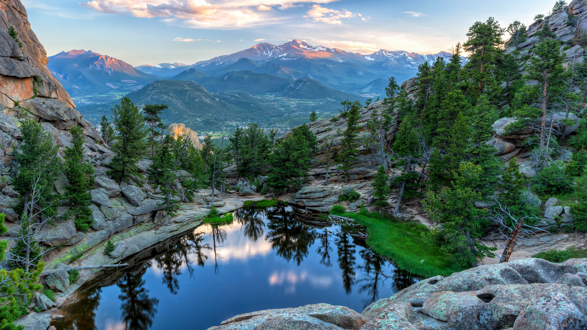
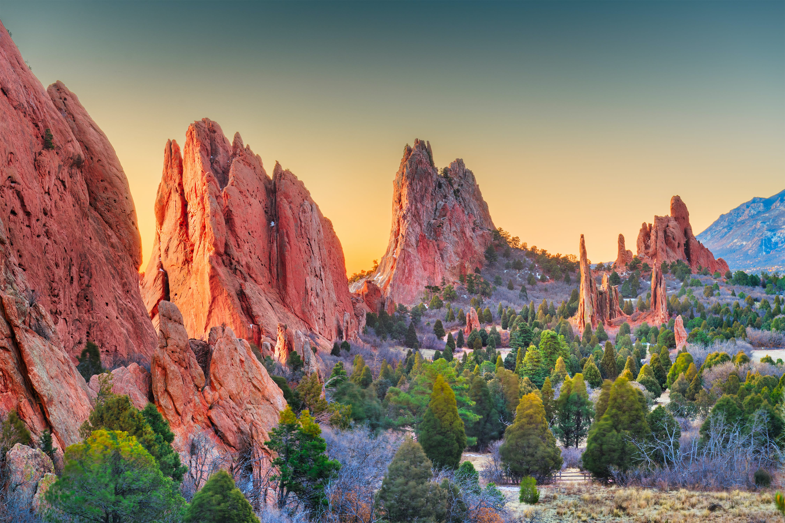

Itinerary

Day 1: Denver
- Grab coffee at Huckleberry Roasters! We loved the murals both inside and outside of this coffee shops, as well as their seasonal drinks!
- Get breakfast at Snooze, an A.M. Eatery. This place is SO good! They are originally from Colorado, but have locations in Texas, Arizona, and California, but it’s worth checking them out in their hometown. Make sure to get their pancake flight! If you’ve had Snooze before, check out Sassafras American Eatery instead!
- Wander around Union Station, which is a beautiful renovated train station from 1914. It’s still a working train station, but is also home to restaurants and shops!
- Explore and have lunch at the Denver Central Market. This indoor market has multiple restaurants to choose from, a bar, coffee, and more! After finishing lunch, grab an ice cream flight from High Point Creamery, which is also in the market and sooo good!
- Head to Red Rocks Park and hike the Red Rocks Trail and then stay for an outdoor concert among the red rocks! You can check out their concert schedule here. Not a fan of anyone playing during your trip? Check out a game at Coors Field instead or go brewery hopping!

Day 2: Boulder
- Kick off the morning with breakfast at Denver Biscuit Co. before heading to Boulder (a 35 minute drive). This biscuit spot has been featured on Diners, Drive Ins, and Dives and is a super popular spot in town, so try to get there early!
- Grab coffee at Boxcar Coffee Roasters in Boulder. This is right on Pearl Street, which is the coolest little street with a view of the mountains.
- Walk around Pearl Street Mall. This tree-lined street is super cute and a bit touristy at times, but we love walking around it! Boulder Book Store was one of our favorite finds on Pearl Street.
- Have a quick lunch on Pearl Street.
- Hike the trails at Chautauqua Park! We recommend the Royal Arch Trail—3.4 miles, 1,358 ft elevation gain. Make sure you’re adjusted to the altitude change (unlike we were) otherwise this will feel a LOT harder!
- Dinner at Mountain Sun Pub & Brewery. This is a cash only spot is a Boulder institution and has a lot of variety for all different taste buds.
- For dessert, head over to Gelato Boy!
- Head back to Denver for the night. Try to get some sleep because tomorrow will be a big adventure!

Day 3:
Day 3: Rocky Mountains
- Leave Denver bright and early to drive to Rocky Mountain National Park, which is a 1.5 hour drive. It gets crazy busy there in the summer and parking can be hard (and there are long shuttle lines), so try to leave as early as possible.
- You have a handful of amazing hiking options for your one day in the park!
- If you have enough time or just want something easy to do, drive Trail Ridge road, which is 48 miles one way and offers amazing views, chances to see wildlife, and overlooks to stop at!
- Walk around Estes Park—Inkwell & Brew is a cool coffee shop if you need a caffeine boost!
- Head back to Denver for dinner. We highly recommend Chop Shop Casual Urban Eatery. It was one of our favorite meals our whole trip! The food feels very high quality and fancy, but it’s an order at the counter joint.
- Walk across the street to grab dessert at Nuggs Ice Cream!

Day 4:
Day 4: Colorado Springs
- Leave Denver relatively early to drive to Colorado Springs, which is about 1 hour 15 minutes away from Denver. You’ll want to make sure to have enough time to explore there!
- Enjoy breakfast + coffee at Switchback Coffee Roasters or Loyal Coffee.
- Drive to the top of Pike’s Peak—the round trip journey to the 14,114′ summit is between 2-3 hours. It does cost money to do this ($10/adult or $35/car with up to 5 people), but the views are amazing!
- Grab lunch at Skirted Heifer or Piglatin Cocina.
- Explore the trails at Garden of the Gods. This park is SO cool and really fun (and easy) to walk around. It’s perfect for all ages and athletic abilities!
- Enjoy one last ice cream at Little Man Ice Cream or Sweet Action Ice Cream (Can you tell we love ice cream?!)